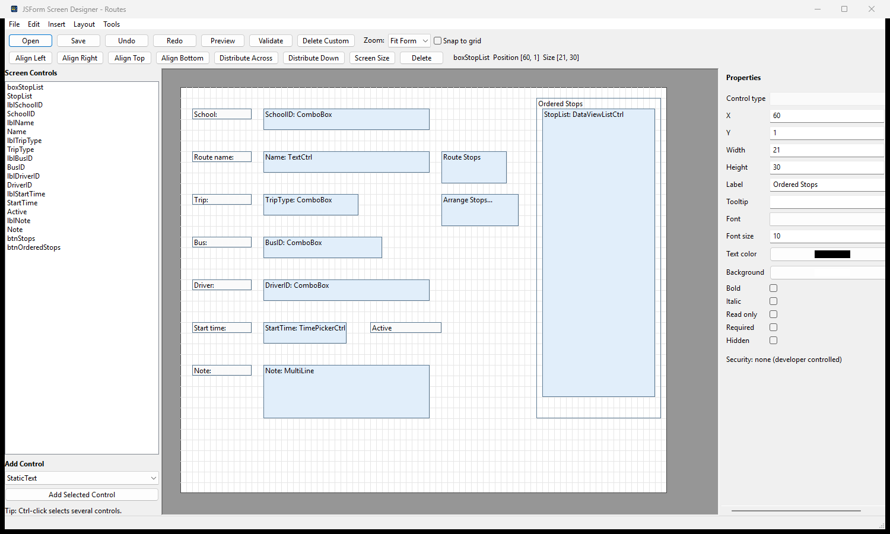
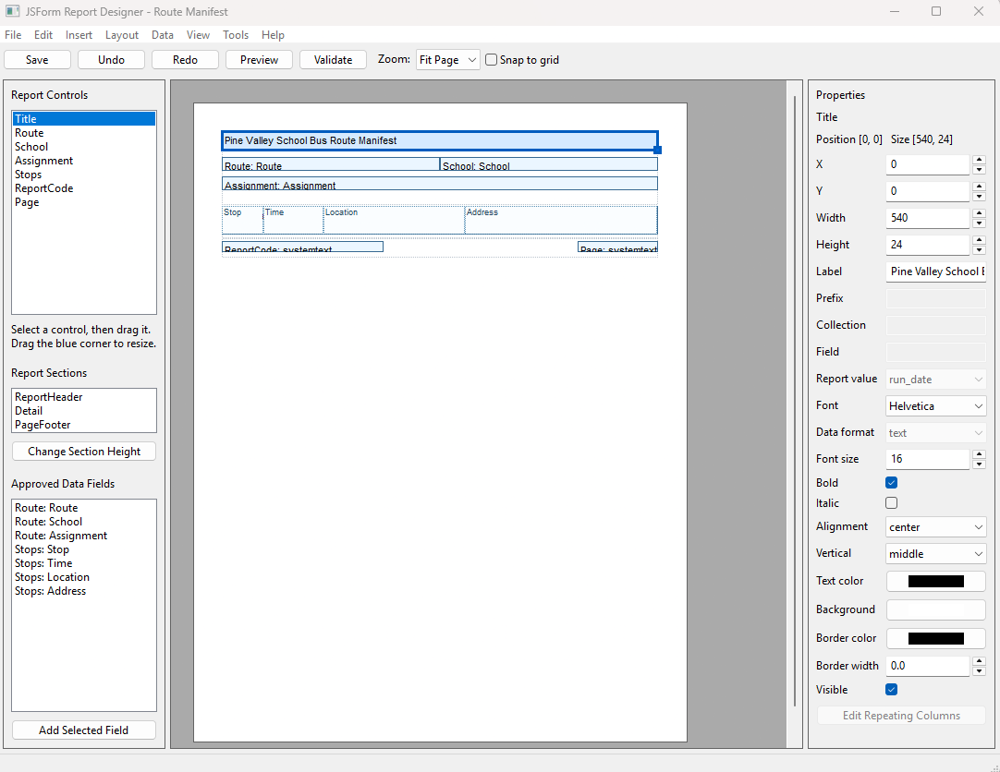
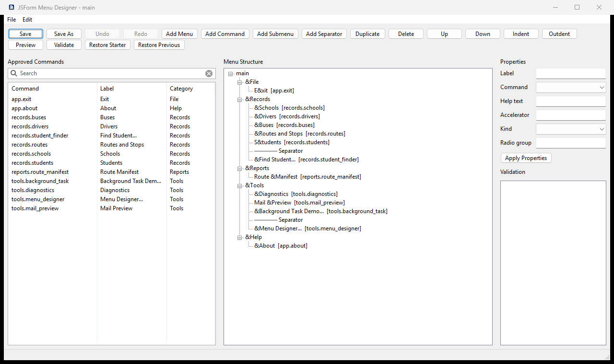
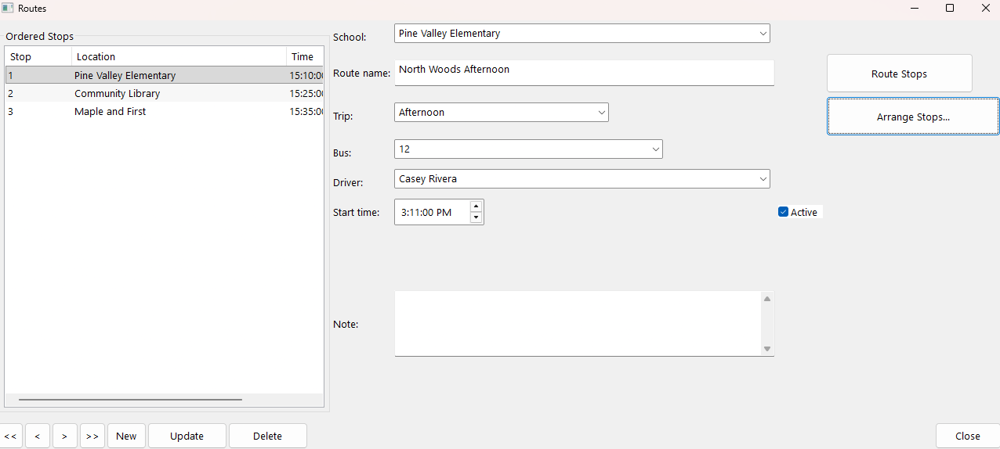
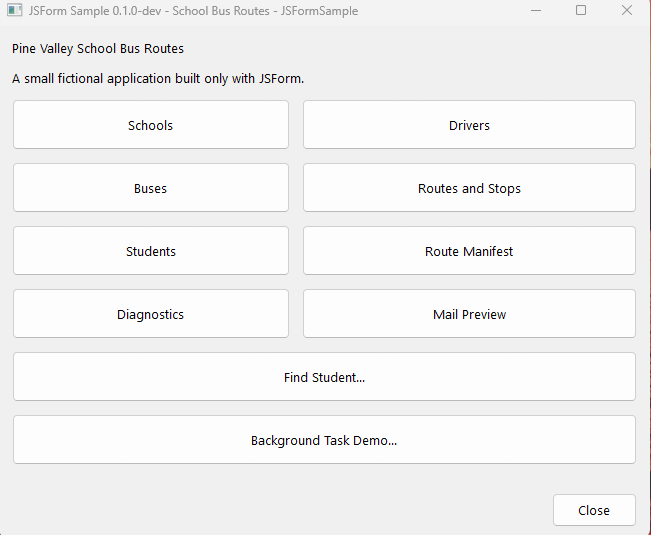
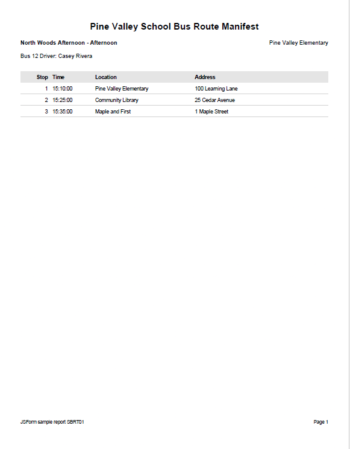

JSON-defined forms
Describe fields, relationships, layouts, controls, and behavior in readable files that remain easy to review and customize.
Open-source beta · 0.1.0-beta.1
JSForm turns structured form definitions into native Python desktop applications—with database records, validation, navigation, visual design tools, and PDF reporting built in.
Python 3.10+ · wxPython · MariaDB or MySQL · Windows-focused
{
"form": Student
,
"table": tblStudent
,
"layout": responsive
,
"fields": [
{ "name": FullName
,
"type": text
,
"required": true }
]
}A practical application framework
Build consistent database applications without rebuilding the same editing, navigation, validation, and reporting machinery for every screen.
Describe fields, relationships, layouts, controls, and behavior in readable files that remain easy to review and customize.
Navigate, create, update, and validate MariaDB or MySQL records through a consistent native interface.
Arrange and customize screens visually while preserving recoverable starter definitions.
Design reusable layouts and generate PDF reports without a separate reporting runtime.
Shared handling for dates, times, numbers, choices, phone formatting, dirty-state checks, and linked forms.
Add authentication, permissions, auditing, diagnostics, and application-specific workflows without forking the framework.
Visual design tools
JSForm keeps readable, validated definitions underneath while giving application developers native visual tools for arranging the user interface and printed output.

Arrange controls on a live grid, edit labels and field properties, align or distribute selections, preview responsive layouts, and validate before saving.

Compose report sections, place data-bound controls, set typography and presentation properties, and preview reusable PDF output without a separate reporting runtime.

Choose from application-approved commands, arrange menus and submenus, edit labels and keyboard accelerators, validate the definition, and preview a real native menu bar safely.
How it fits together
Included demonstration
The School Bus Routes sample demonstrates forms, choices, parent-child records, ordered route stops, visual screen customization, and a designed PDF route manifest.

One framework, complete workflow


Current release
The framework has entered public beta. Download the verified Python package or inspect the complete source on GitHub.
SHA-256: 06aa7d0cb0639ad045d18440a4ec5a0b4fd7bf92e580e6282fceeffa3af1fdee
Project resources